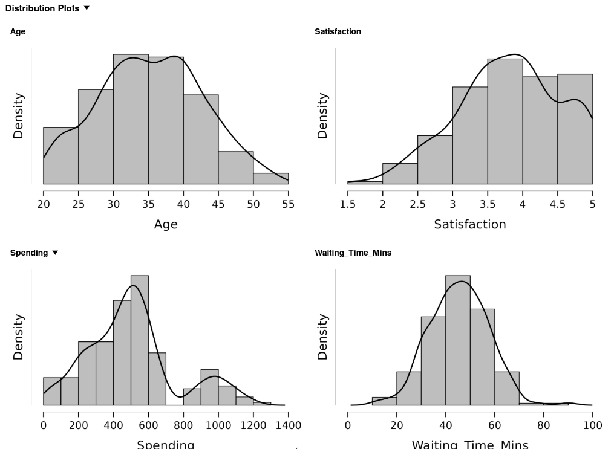
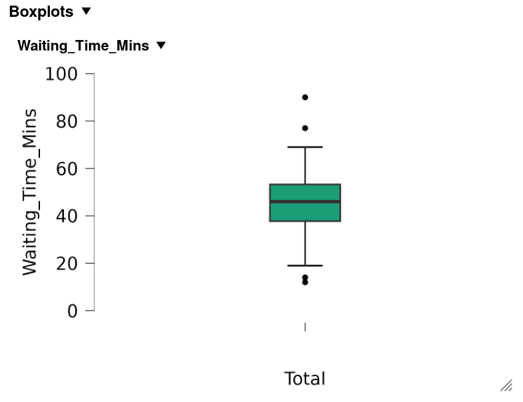

Part 1: The shape of a distribution
shape of a distribution, skewness, kurtosis, standard error of skewness, histogram, boxplot, JASP workflow
The same service manager from chapter 1 has read your summary and comes back with two sharper questions. One customer waited 77 minutes. Was that an ordinary bad day, or a sign that something went wrong? And can the branch promise that nine customers in ten will be seen within an hour?
Chapter 1 gave you the centre and the spread of the waiting times. To answer these questions you need to know where a single value falls inside the distribution, and what share of customers falls beyond a given point. That takes the shape of the distribution, the normal curve, and the z-score.
You will use the same file, DMM_Teaching_Data_Full.csv, 200 customer records with 26 variables. Every figure quoted in this chapter comes from that file and is printed on the page. The dataset overview lists every variable it contains.
This chapter’s lecture
Lecture JASP workflow and normal distribution
Discussion
1 Welcome and weekly goals
⏱ 10 min
Connect last week’s descriptive work to the shape, the spread and the unusual values in a dataset.
Acquisition
2 Normal curve and z-scores
⏱ 30 min
How the normal distribution, the empirical rule and z-scores help you judge whether a value is typical or unusual.
Practice
3 Worked example and discussion
⏱ 15 min
Work through a short example and explain what a z-score tells you in plain language.
Assessment
4 Exit check
⏱ 5 min
A short exit check on the normal curve or z-score interpretation.
Learning objectives
After studying this chapter you should be able to:
- Describe the shape of a distribution from a histogram and a boxplot, naming its peaks, its symmetry and its tails.
- Interpret skewness and kurtosis, and judge each against its standard error.
- Follow a repeatable workflow in JASP or PocketStat from loading a file to an annotated output.
- State the properties of the normal distribution and use the empirical rule to estimate the share of cases within one, two and three standard deviations of the mean.
- Apply Chebyshev’s rule when the shape of a distribution is unknown or clearly non-normal.
- Calculate a z-score, convert a z-score back into the original units, and use z-scores to compare values measured in different units.
- Classify a value as typical, unusual or extreme from its z-score, and explain in plain language what that means for a manager.
- Use the standard normal table to find the share of cases above, below or between two values, and the value that marks a given percentile.
- Judge whether a variable is close enough to normal for the normal model, using a histogram, a Q-Q plot, skewness, kurtosis and the Shapiro-Wilk test.
- Recognise when the normal model gives impossible or distorted answers, and report the alternative.
This week’s learning plan is 9 hours: 1 hour of synchronous lecture, 2 hours of synchronous tutorial, and 6 hours of asynchronous self-study.
You must read all four parts of this chapter in full before moving to the tutorial. You are permitted to use Google NotebookLM to brainstorm the concepts. Complete the worked examples and the Try It exercises yourself, with no AI assistance. The full policy, and the reason NotebookLM is the only tool permitted, is on the Using AI on This Module page. NotebookLM reads one web page per source, so add all six pages of this chapter to your notebook, as set out in adding a chapter to NotebookLM.
Keep a calculator beside you. Every z-score in this chapter is worked by hand once, and the tutorial asks you to check the software against your own arithmetic.
If you finish this chapter before the planned time, continue to the recommended reading in the independent study section. Use the independent study for revision, then take the checkpoint quiz.
Where a value sits
A single value means little until you know where it sits among the others. Chapter 1 gave you two numbers for the waiting times in the teaching dataset: a mean of 45.5 minutes and a standard deviation of 11.9 minutes. Those two numbers describe the column as a whole. The manager’s question is about one customer.
For example: respondent 58 waited 77 minutes. That is 31.5 minutes above the mean. Whether 31.5 minutes is a lot depends on how much waiting times usually vary. In a branch where almost every wait falls between 44 and 47 minutes, 77 would be astonishing. In a branch where waits range freely from 10 minutes to two hours, 77 would pass unnoticed.
The position of a value depends on two factors. The first is its distance from the centre and the second is the spread that distance is measured against. The shape of the distribution acts as a third factor that determines how to read the result. Distance and spread tell you how far out a value falls. Shape tells you how many other cases you should expect to find that far out.
Four terms for this chapter
Four terms appear throughout the chapter. Each gets a full section later. You need to recognise all four now, because the next few pages use them before those sections arrive.
A distribution is the pattern of values a variable takes: which values occur, and how often. A frequency table and a histogram are two ways of displaying one.
The shape of a distribution is the outline its histogram makes: where it peaks, whether its two sides mirror each other, and how far its tails stretch.
The normal distribution is a particular symmetric, bell-shaped curve. It serves as a reference model, and much of statistics compares real data against it.
A z-score states how many standard deviations a value lies above or below the mean. Respondent 58’s wait of 77 minutes has a z-score of 2.65, meaning it lies 2.65 standard deviations above the mean. z-scores shows how that number is calculated and what it tells a manager.
Reading a histogram for shape
A histogram shows the shape of a continuous variable directly. You met it in chapter 1 as the display for one measurement across all cases. This chapter reads it more closely, and asks three questions of every histogram you draw.
How many peaks? A distribution with one clear peak is unimodal. A distribution with two separate peaks is bimodal in shape, which usually means two different groups share one column. Chapter 1 used “bimodal” for a column with two equally frequent values. Waiting time had two, 42 and 47 minutes, each recorded 10 times. Its histogram still rises to a single peak in the mid-40s, so its shape is unimodal. In this chapter, unimodal and bimodal describe the shape of the histogram.
Do the two sides mirror each other? A distribution whose left and right halves are close to mirror images is symmetric. One with a longer tail on one side is skewed towards that side. Chapter 1 showed you how to spot skew by comparing the mean with the median. This chapter adds a number that measures it.
How heavy are the tails? Two distributions can share a centre, a spread and perfect symmetry, and still differ in how often extreme values occur. One piles its cases tightly around the centre and sends a few far out. The other spreads its cases evenly across the range and has almost none in the far tails. Kurtosis measures this property, and Kurtosis and the tails covers it.

The four variables in Figure 2.1 show four different shapes, and each one shows a different pattern to a manager.
| Variable | Mean | Median | Minimum | Maximum | Shape |
|---|---|---|---|---|---|
Waiting_Time_Mins |
45.46 | 46.00 | 12 | 90 | One peak, close to symmetric |
Spending |
505.65 | 494.28 | 6.34 | 1,201.01 | Two peaks: most near 500, a VIP group near 1,000 |
Satisfaction |
3.81 | 3.86 | 1.58 | 5.00 | One peak, cut off at the top of the scale |
Age |
35.35 | 35.00 | 22 | 52 | Symmetric, broad and flat |
Satisfaction needs a closer look. The score runs from 1 to 5, and 12 of the 200 customers scored exactly 5.00, the highest score the scale allows. A scale with a maximum stops the right tail at that maximum. Any customer who would have scored above 5 is recorded as 5, so the cases pile up against the top of the scale. This pile-up is called a ceiling effect, and the longer tail appears on the left. A floor effect is the same pattern at the bottom of a scale.
Worked example 2.1
Describing a shape in words
The histogram of Spending in Figure 2.1 rises to a tall peak between 500 and 600 USD, drops to nothing between 700 and 800 USD, and rises again to a smaller peak near 1,000 USD. The lowest value is 6.34 USD and the highest is 1,201.01. The mean is 505.65 and the median is 494.28.
Describe the shape in one sentence a manager could read, name the evidence for each part of the description, and suggest what the second peak might be.
Description: Spending has two peaks: most customers spend up to about 700 USD, centred near 500, and a separate group of 30 customers spends between 850 and 1,200 USD.
Evidence, part by part:
- Two peaks. The tallest bar, 500 to 600 USD, holds 47 customers. A second, smaller rise peaks at 900 to 1,000 USD, with 13 customers.
- A gap between them. No customer spent between 700 and 800 USD, so the two groups do not overlap.
- A lean to the right. The mean is 11.37 USD above the median. The high group pulls the mean up. The median stays near the middle of the main group.
What the second peak is: Two peaks usually mean two groups share one column. Ticket_Type confirms it. The 30 customers above 800 USD are exactly the 30 VIP ticket holders, and no standard or student customer spent more than 700 USD.
A manager reading the sentence learns that VIP customers are a distinct group. They are 15 per cent of customers and bring in 29 per cent of all spending, so their spending belongs in its own line of the report.
Skewness as a number
Skewness measures how far a distribution leans to one side. JASP and PocketStat both report it as a single number.
- A skewness near 0 means the distribution is close to symmetric.
- A positive skewness means a longer tail on the right, called right skew or positive skew.
- A negative skewness means a longer tail on the left, called left skew or negative skew.
The sign gives the direction. The size gives the strength of the lean. A common rule of thumb for the size reads as follows.
| Skewness, ignoring the sign | Reading |
|---|---|
| Under 0.5 | Close to symmetric |
| 0.5 to 1 | Moderately skewed |
| Over 1 | Strongly skewed |
The statistic is built from cubed z-scores: each value’s distance from the mean in standard deviations, cubed, then averaged. Cubing keeps the sign, so values far above the mean push the total up and values far below push it down. Cubing also magnifies the far values, so the tails dominate the result. You will read skewness from the software, and the formula appears in the formula review on the reference page for anyone who wants it.
Skewness against its standard error
Every statistic calculated from a sample would come out a little different in another sample. The standard error of a statistic measures how much it would typically vary from one sample to the next. Chapter 4 builds on the standard error in detail. Here you need it for one purpose: to judge whether a skewness figure is larger than sampling variation alone would produce.
JASP reports the standard error of skewness beside the skewness itself. For a sample of 200, the standard error is 0.172. Divide the skewness by its standard error:
\[\text{skewness ratio} = \frac{\text{skewness}}{\text{SE of skewness}}\]
A ratio beyond 2 in either direction indicates skew that is more than sampling variation. A ratio between \(-2\) and \(+2\) is consistent with a symmetric population.
| Variable | Skewness | SE | Ratio | Size | Reading |
|---|---|---|---|---|---|
Waiting_Time_Mins |
0.112 | 0.172 | 0.65 | Under 0.5 | Symmetric |
Age |
0.038 | 0.172 | 0.22 | Under 0.5 | Symmetric |
Satisfaction |
-0.289 | 0.172 | -1.68 | Under 0.5 | Mild left lean, within sampling variation |
Spending |
0.635 | 0.172 | 3.69 | 0.5 to 1 | Moderately right-skewed |
Table 2.3 rounds every figure to three decimal places. JASP’s default display shows four significant figures, so your own output reads 0.1116 for waiting time, 0.03785 for age and 0.1719 for the standard error. The values are the same. To make JASP print three decimal places, open Preferences, choose Results, and set Fix the number of decimals to 3, as the tutorial does in its second step.
The two rules answer different questions. The size rule asks whether the lean is large enough to matter for the summary you choose. The ratio asks whether the lean is larger than chance. With a large sample, the ratio flags small leans that make no practical difference. With a small sample, it misses large ones. Read both, and let the histogram settle any disagreement.
JASP reports a skewness of 0.112 for Waiting_Time_Mins. PocketStat reports 0.110 for the same column.
Two formulas are in common use. PocketStat uses the simpler one, which averages the cubed z-scores over \(n\). JASP, like SPSS, multiplies that result by a small correction for sample size, \(n^2/\big((n-1)(n-2)\big)\), which for 200 cases is 1.015. The standard errors differ for the same reason: PocketStat uses \(\sqrt{6/n} = 0.173\), and JASP uses a longer formula that gives 0.172.
The gap shrinks as the sample grows, and at 200 cases it changes no conclusion. Report which tool produced your figures, as you did for quartiles in chapter 1.
Worked example 2.2
Deciding whether skew matters
A manager asks for “the typical spend and the typical wait” in one line of a report. JASP gives the figures in Table 2.3.
For each variable, decide whether the skew is large enough to change the summary you report, and choose the centre and spread to quote.
Waiting time: Skewness is 0.112, well under 0.5, and the ratio of 0.65 falls inside \(\pm 2\). The distribution is close to symmetric, so the mean and the standard deviation describe it well: 45.5 minutes, with a standard deviation of 11.9.
Spending: Skewness is 0.635, in the moderate band, and the ratio of 3.69 is well beyond 2. Both rules agree that the lean is real. The median and the interquartile range describe the typical customer better: a median of 494.28 USD, with the middle half spending between 340.04 and 596.99 USD.
The line in the report reads:
The typical customer waited 45.5 minutes (standard deviation 11.9) and spent 494 USD (median, with the middle half between 340 and 597 USD).
Two variables in one sentence can take two different summaries, as long as the sentence names each one.
Four small illustrative datasets, separate from the teaching dataset, make up this exercise. Each appears in its own tab as a CSV file: a column name on the first line, then one value per line from lowest to highest.
Adult heights in centimetres, \(n = 25\). Download ch02-tryit-heights.csv
Height_cm
168
170
171
172
173
174
174
175
175
175
176
176
177
177
178
178
179
180
181
182
183
184
185
186
188Final exam scores out of 100, \(n = 30\). Download ch02-tryit-exam-scores.csv
Exam_Score
58
62
66
68
72
75
76
78
79
80
81
82
83
84
85
85
86
87
88
89
90
91
92
93
94
95
96
97
98
99Household income in hundreds of USD a month, \(n = 25\). Download ch02-tryit-income.csv
Income_Hundreds_USD
12
15
18
22
25
28
30
32
35
38
40
42
45
48
50
55
60
65
70
75
80
90
100
110
125Personal net worth in thousands of USD, \(n = 30\). Download ch02-tryit-net-worth.csv
Net_Worth_Thousands_USD
15
18
22
25
28
30
32
35
38
40
42
45
48
50
52
55
58
60
65
70
75
80
90
100
120
150
200
350
800
2500JASP reports the following for the four datasets.
| Dataset | Mean | Median | Skewness | SE of skewness |
|---|---|---|---|---|
| A. Heights | 177.48 | 177.00 | 0.288 | 0.464 |
| B. Exam scores | 83.63 | 85.00 | -0.696 | 0.427 |
| C. Income | 52.40 | 45.00 | 0.832 | 0.464 |
| D. Net worth | 176.43 | 53.50 | 4.732 | 0.427 |
- Calculate the skewness ratio for each dataset.
- Classify each shape with the size rule in Table 2.2, naming the direction of any skew.
- Say where the size rule and the ratio disagree, and explain why.
- Choose the measure of centre you would report for each dataset.
To check a figure in the software, load the dataset as a CSV file. JASP and PocketStat both open CSV files directly, so a CSV file is the most reliable route in.
- Get the file: Click the download link in the dataset’s tab and go straight to step 4. If the download is blocked, hover over the grey block and click the copy button at its top right.
- Paste it into a plain-text editor: On Windows, use Notepad. On a Mac, use TextEdit, and choose Format, then Make Plain Text before you paste.
- Save it with a
.csvending, for exampleheights.csv. In Notepad, set Save as type to All files first, or Windows saves it asheights.csv.txt. In TextEdit, untick any option to add a.txtending. - Open it: In JASP, open the file menu, then Open, Computer, Browse, and choose the file. In PocketStat, open the upload card on the Data tab and choose it.
- Check and run: Confirm the one column reads as scale and the row count matches the tab’s \(n\). Then run Descriptive Statistics in JASP with Skewness ticked, or Distribution shape in PocketStat.
PocketStat’s skewness differs from JASP’s in the third decimal, for the reason given in the callout on the two formulas.
- A: \(0.288 \div 0.464 = 0.62\). B: \(-0.696 \div 0.427 = -1.63\). C: \(0.832 \div 0.464 = 1.79\). D: \(4.732 \div 0.427 = 11.08\).
- A is close to symmetric, under 0.5. B is moderately skewed to the left, between 0.5 and 1 with a negative sign: a few low scores stretch the left tail. C is moderately skewed to the right: a few higher incomes stretch the right tail. D is strongly skewed to the right, far over 1, with three values, 350, 800 and 2,500, far out in the tail.
- B and C are moderately skewed by size, and their ratios, \(-1.63\) and \(1.79\), stay inside \(\pm 2\). With 25 or 30 cases the standard error is large, about 0.43 to 0.46, so the ratio misses a lean the size rule catches. The mean-against-median gap confirms the lean in both: the mean is 1.37 marks below the median for B and 7.40 above it for C.
- A: the mean, 177.48 cm, because the shape is symmetric. B, C and D: the median. For D the mean of 176.43 is above 26 of the 30 values, and the median of 53.50 describes a typical person.
Kurtosis and the tails
Kurtosis measures how heavy the tails of a distribution are compared with a normal distribution of the same spread. JASP and PocketStat report excess kurtosis, which is set so that a normal distribution scores 0.
- Positive excess kurtosis means heavier tails than normal. Extreme values turn up more often than a normal curve would predict, and the peak is usually sharper. A distribution like this is called leptokurtic.
- Negative excess kurtosis means lighter tails than normal. The cases spread more evenly across the range, the peak is flatter, and extreme values are rarer. A distribution like this is called platykurtic.
Kurtosis matters to a manager because of the tails. A process with heavy tails produces more very long waits, very large orders or very bad days than its standard deviation suggests. Planning built on the normal curve will then underestimate how often the extreme case arrives.
Kurtosis has its own standard error, and the same ratio test applies. For 200 cases, JASP reports a standard error of kurtosis of 0.342.
| Variable | Excess kurtosis | SE | Ratio | Reading |
|---|---|---|---|---|
Waiting_Time_Mins |
0.482 | 0.342 | 1.41 | Tails slightly heavier than normal, within sampling variation |
Age |
-0.599 | 0.342 | -1.75 | Flatter than normal, close to the limit |
Satisfaction |
-0.397 | 0.342 | -1.16 | Slightly flat, within sampling variation |
Spending |
0.195 | 0.342 | 0.57 | Close to normal tails |
Worked example 2.3
A symmetric variable that is flat
Age has a skewness of 0.038 and an excess kurtosis of -0.599, with a standard error of kurtosis of 0.342. Ages run from 22 to 52 with a mean of 35.3 and a standard deviation of 7.3.
Describe the shape, and decide what it means for a marketing manager planning one campaign aimed at “the typical customer’s age”.
Shape: The skewness is close to 0, so age is symmetric. The kurtosis ratio is \(-0.599 \div 0.342 = -1.75\), negative and close to the limit of \(-2\). Age is flatter than a normal distribution: customers are spread fairly evenly from the mid-20s to the mid-40s, with no tall peak at 35.
Consequence: A flat distribution has a weak centre. The mean of 35 is correct as an average, and relatively few customers are close to it. Within one standard deviation of the mean, from 28 to 42.7 years, the data contain 138 of the 200 customers, 69 per cent. The other 31 per cent are spread across the 20s and the upper 40s.
A campaign aimed at 35-year-olds reaches the middle of a broad group. The manager would do better to plan for a range, for example two versions aimed at the late 20s and the early 40s.
A delivery firm records the minutes each of 200 deliveries took. JASP reports a skewness of 1.34 and an excess kurtosis of 2.10. The standard errors are 0.172 and 0.342.
- Calculate the skewness ratio and the kurtosis ratio.
- Describe the shape in one sentence.
- State which centre and spread you would report, and why.
- Explain what the kurtosis figure warns the operations manager about.
- Skewness ratio: \(1.34 \div 0.172 = 7.79\). Kurtosis ratio: \(2.10 \div 0.342 = 6.14\). Each is well beyond 2, so both departures exceed sampling variation.
- Delivery times are strongly skewed to the right, with a skewness over 1, and have heavier tails than a normal distribution: most deliveries are quick, and a minority take far longer.
- The median and the interquartile range. A skewness of 1.34 is in the strong band, so the tail of slow deliveries would pull the mean well above the typical delivery.
- Positive excess kurtosis means very slow deliveries happen more often than a normal curve with the same standard deviation predicts. A service promise set at “mean plus two standard deviations” will be broken more often than a normal curve predicts.
Boxplots and shape
A boxplot shows shape through its proportions. Chapter 1 introduced it as a display of the quartiles with fences at \(1.5 \times IQR\). Read against shape, each part of the box says something.
- The median line: In a symmetric distribution it is near the middle of the box. When it is closer to one end, the half of the box on the other side is longer, and the data are skewed that way.
- The whiskers: Whiskers of similar length suggest symmetry. A longer whisker marks the longer tail.
- The points beyond the whiskers: Cases beyond the fences appear individually. Three or more on one side only point to skew. A handful on both sides of an otherwise symmetric box point to heavy tails.
For waiting time, the quartiles are 37.75, 46 and 53.25 minutes. The median is 8.25 minutes above \(Q_1\) and 7.25 minutes below \(Q_3\), close to the middle of the box. Four points lie beyond the fences, two on each side, at 12 and 14 minutes and at 77 and 90. That is a symmetric box with a few distant cases on both sides.

A boxplot of order values in USD has \(Q_1 = 42\), median \(= 51\) and \(Q_3 = 88\). The lower whisker reaches 18 and the upper whisker reaches 150. Seven points lie above the upper whisker and none below the lower one.
- Is the distribution symmetric, right-skewed or left-skewed? Give two pieces of evidence.
- Would you expect the mean to be above or below 51?
- Right-skewed: The median is \(51 - 42 = 9\) USD above \(Q_1\) and \(88 - 51 = 37\) USD below \(Q_3\), so the upper half of the box is about four times longer. The upper whisker reaches \(150 - 88 = 62\) USD beyond the box, against \(42 - 18 = 24\) USD for the lower. All seven distant points lie above.
- Above 51: The tail of large orders pulls the mean up. The median stays in place.
A repeatable workflow
Every analysis in the rest of this module follows the same five steps, whichever tool you use. Chapter 1 took you through the first three. This chapter adds the last two, and the tutorial practises all five.
| Step | What you do | What it protects against |
|---|---|---|
| 1. Load | Open the file and confirm the row and column counts | A file read with the wrong delimiter, or a partial file |
| 2. Set types | Check every variable’s measurement level and correct it | A mean calculated on codes |
| 3. Describe | Centre, spread and frequency tables | Reporting a result you have never looked at |
| 4. Look at shape | Histogram, boxplot, skewness, kurtosis | Using a summary the shape does not support |
| 5. Annotate and export | Add a note to the output, then save or copy it | Output that nobody can interpret a week later |
Step 4 comes before any test. Chapters 4 onward choose between tests partly on shape, and a test chosen before the shape is known has been chosen blind.
Step 5 turns output into evidence. JASP lets you attach a written note to any table or plot in the output, and PocketStat builds a short write-up beside each result. A note written at the time, such as “Satisfaction piles up at 5.00, so the left tail is partly a ceiling effect”, saves the reader from rediscovering it, and saves you from forgetting it.
The reference page lists the exact menu steps for both tools, and the tutorial takes you through them at the machine.
Section summary
A value’s position depends on its distance from the centre, the spread that distance is measured against, and the shape of the distribution. A histogram shows the shape through its peaks, its symmetry and its tails. Skewness measures the lean and kurtosis measures the weight of the tails, and each is judged by its size and by its ratio to its standard error. A scale with a maximum can create a ceiling effect that looks like skew. The five-step workflow puts the look at shape before any summary is chosen.